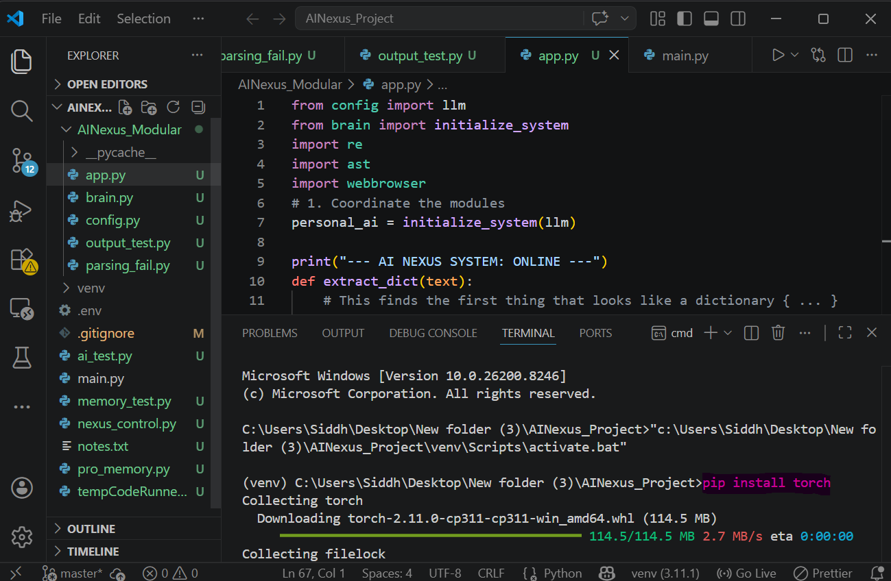
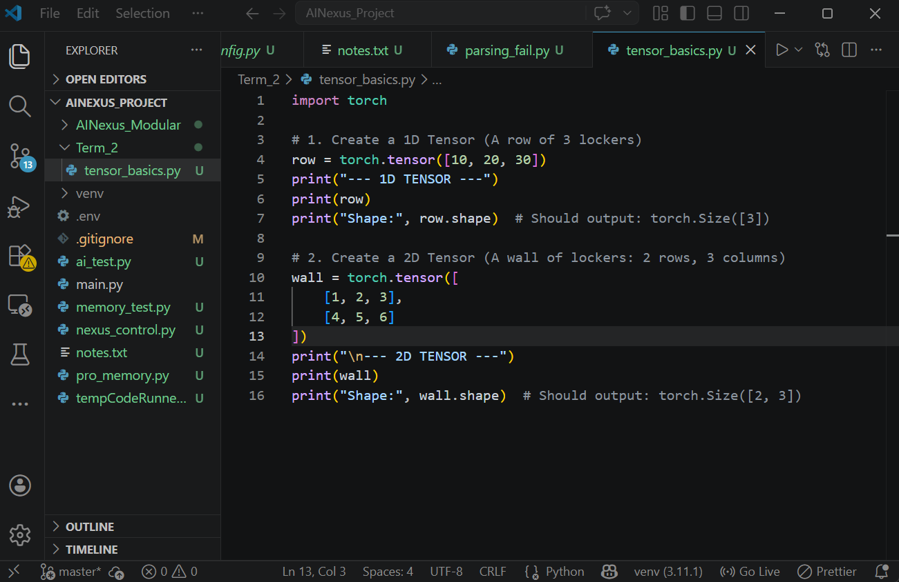
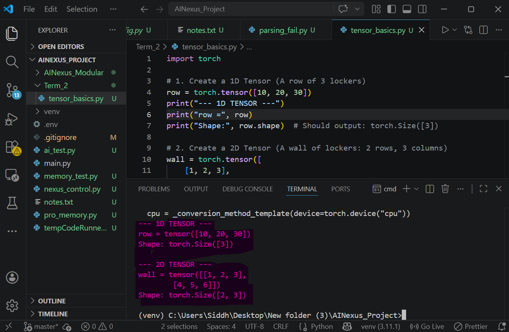
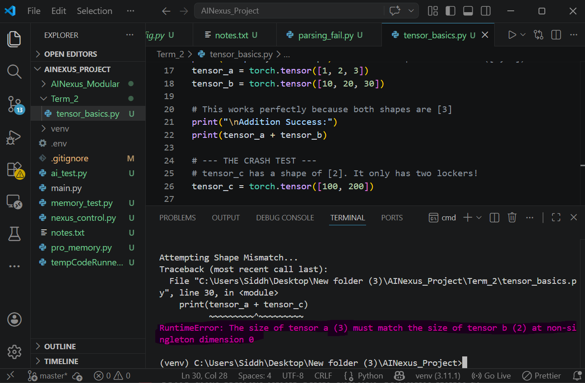

Session 1: Digital Concrete (Tensors)
In Term 1, you rented a brain. In Term 2, you build your own. Today, we mix the mathematical concrete that will become your Nano-GPT.
Session Mission
By the end of this hour, you will understand how Artificial Intelligence "sees" data. You will install PyTorch, create multi-dimensional Tensors, perform machine learning math, and debug the most famous error in AI: the Shape Mismatch.
1. The "Data Container" Mindset
Computers are like massive calculators—they don't actually know what an "Apple," "sadness," or "YouTube" is. They only understand numbers.
In Term 1, your brain.py used an API that hid the machinery from you. When you typed "Open YouTube," the cloud turned those words into numbers—like [23, 91, 442, 10]. Now, you are stepping inside that layer yourself. You were never interacting with intelligence directly—you were interacting with the output of math.
The Locker Analogy
Imagine a single school locker. It holds one thing—a single value. That is a basic variable (0D).
Now, imagine a long row of lockers. That is a 1D Tensor (List). Finally, imagine a giant wall of lockers with many rows and columns. That is a 2D Tensor (Matrix).
These structures are called Tensors. They are the specialized containers we use to hold all the numbers an AI needs to process information.
THE ARCHITECT'S BRIDGE
In Term 1, your brain.py looked like it understood text. In reality, the OpenAI API hid the math layer from you. Your brain.py was actually sitting directly on top of millions of tensor operations. Every word you typed was converted into math before the "Brain" could even start thinking.
2. What is a Tensor? (From Intuition to Reality)
A Tensor is a structured collection of numbers arranged in one or more dimensions.
In programming terms, a tensor is like a generalized version of a list:
- A single number → 0D Tensor (Scalar)
- A list of numbers → 1D Tensor (Vector)
- A grid of numbers → 2D Tensor (Matrix)
- Multiple grids stacked together → 3D+ Tensor
The only thing that changes is the number of dimensions.
The Structure (This is what matters)
Every tensor has two key properties:
- Values: The actual numbers
- Shape: How those numbers are arranged
Example:
tensor([
[1, 2, 3],
[4, 5, 6]
])
This tensor has:
- Values: 1, 2, 3, 4, 5, 6
- Shape: [2, 3] → 2 rows, 3 columns
Important: Shape defines how data flows in AI systems.
How this looks in code
import torch
x = torch.tensor([
[1, 2, 3],
[4, 5, 6]
])
print(x.shape) # torch.Size([2, 3])
The computer does not “see a grid.”
It sees:
→ a block of numbers
→ arranged in a specific structure
The AI Perspective
Every input to an AI model is a tensor.
For example:
- Text → converted into a list of numbers → 1D Tensor
- Image → pixels → 3D Tensor (Height × Width × Channels)
- Batch of images → 4D Tensor
This means:
AI never sees meaning. It only sees numbers inside tensors.
One Concrete Example (End-to-End)
Let’s say you type:
"Hi"
Step 1: Convert characters to numbers
"H" → 7
"i" → 12
Step 2: Store them in a tensor
[7, 12] → 1D Tensor
Step 3: Model processes this tensor using math
Final Insight:
The model never sees "Hi" — it only sees [7, 12].
3. Why Tensors Exist
If AI is just math, where do all those millions of numbers go? We need a way to store them, keep them organized, and move them around extremely fast.
Tensors are the solution. They act like high-speed storage boxes that let computers perform thousands of calculations at the same time. No tensors = no computation = no intelligence. If there are no numbers to process, there is nothing for the AI to learn from.
4. Equipping the Heavy Machinery (PyTorch)
Doing tensor math manually is like trying to build a skyscraper using only a hand-held screwdriver—it is too hard and takes forever!
PyTorch is our power tool. It handles the heavy lifting of complex calculations instantly so we can focus on building the brain. It is the exact same framework used by Meta to build Llama 3 and Tesla to build self-driving cars.
🛠 Activity: Install PyTorch
- Open VS Code and navigate to your main AI Nexus project folder.
- Open your terminal and activate your Virtual Environment.
venv\Scripts\activate(Windows)source venv/bin/activate(Mac/Linux) - Once you see
(venv), run the installation command:pip install torch - Wait for the download to finish.

CPU vs GPU — The Reality Check
You are installing the CPU version of PyTorch on purpose.
Real-world AI models (like GPT-4) require powerful GPUs because they train on billions of data points.
Your Nano-GPT is different.
- Small dataset
- Small model size
- Short training time
This means your system can run completely on a normal laptop.
Engineering Insight: We are learning the logic of AI, not scaling infrastructure.
5. Mixing the Concrete
Let's create our first Tensors and use the most important command in all of AI engineering: .shape.
THE .SHAPE COMMAND: SYSTEM COMPATIBILITY
Shape is like the blueprint of your data. It tells you how everything is arranged.
AI engineers don't look at numbers; they look at .shape. In Term 1, your "Data Contract" required specific JSON keys. If you sent the wrong key, the system broke.
Every layer in an AI expects a specific Tensor Shape. Shape defines compatibility, not just size. If you ignore shape, you are guessing. If you track shape, you are engineering.
Engineering Insight: Wrong JSON key = system logic failure. Wrong Tensor shape = model crash.
🛠 Activity: Your First Tensors
Create a new folder with a name Term_2
Inside this new folder create a new file called tensor_basics.py
- Type the following code:
- Run the script:
python Term_2/tensor_basics.py - Verify: Do you see
torch.Size([2, 3])for the wall? This means the computer sees 2 lists, each containing 3 items.
import torch
# 1. Create a 1D Tensor (A row of 3 lockers)
row = torch.tensor([10, 20, 30])
print("--- 1D TENSOR ---")
print("row =", row)
print("Shape:", row.shape) # Should output: torch.Size([3])
# 2. Create a 2D Tensor (A wall of lockers: 2 rows, 3 columns)
wall = torch.tensor([
[1, 2, 3],
[4, 5, 6]
])
print("\n--- 2D TENSOR ---")
print("wall =", wall)
print("Shape:", wall.shape) # Should output: torch.Size([2, 3])


6. Higher Dimensions (3D / 4D)
AI sees more than just rows and columns. Think of a digital image: it has a Height and a Width, but it also has Channels (the Red, Green, and Blue colors). That is a 3D tensor: [Height, Width, Channels].
If you stack 32 of those images on top of each other to process them all at once, you get a 4D tensor. It’s like a stack of photos waiting to be scanned! This is how AI processes vision at scale.
This is exactly how apps like Instagram or Snapchat process images in real time.
7. Tensor Math & The "Shape Mismatch"
AI "learning" is actually just millions of tensor additions and multiplications happening very fast. But there is a strict rule: The grids must fit together.
🛠 Activity: The Crash Test
Let's do some math, and then intentionally break our program so you know what a Machine Learning error looks like.
- Add this code to the bottom of your
tensor_basics.pyfile: - Uncomment the last line (remove the
#) and run the script. - You should see an error containing:
RuntimeError: The size of tensor a (3) must match the size of tensor b (2).
# --- TENSOR MATH ---
tensor_a = torch.tensor([1, 2, 3])
tensor_b = torch.tensor([10, 20, 30])
# This works perfectly because both shapes are [3]
print("\nAddition Success:")
print(tensor_a + tensor_b)
# --- THE CRASH TEST ---
# tensor_c has a shape of [2]. It only has two lockers!
tensor_c = torch.tensor([100, 200])
print("\nAttempting Shape Mismatch...")
# Uncomment the line below to break your code!
# print(tensor_a + tensor_c)

⚙️ Fix the System
The system just crashed due to shape mismatch.
Your task:
Modify tensor_c so that the addition works.
What shape should it have?
Shape Mismatch: A System Constraint
Imagine trying to put a giant encyclopedia on a tiny shelf meant for pocketbooks. It won't fit! In AI, every layer is like a shelf. If the data (the books) doesn't have the exact right shape, it crashes.
Think of it as mismatched gears. If one gear has 10 teeth and the other has 8, the machine stops. If shapes don’t align, the system doesn’t negotiate—it fails instantly. Engineering is about making sure every "book" fits its "shelf."
Fixing it: Always use print(tensor.shape) right before a crash to see which gear is out of alignment.
The Logic of Prediction
An AI doesn't "think" about your question. Instead, it calculates probabilities over numbers to decide what word comes next. Prediction is simply the final result of high-speed math—if the tensor operations fail, the "intelligence" fails.
Every "Next Word" your Nano-GPT makes in future sessions is based on these operations. In the next session, you will see how text is broken into these numbers before this math even begins.
THE IDENTITY SHIFT
Today, you didn't just build GPT—you built the foundational layer upon which every GPT is stacked. You now understand the internal mechanics required to control AI.
You are no longer treating AI as a black box; you are understanding the machinery that 99% of AI users will never see. Welcome to the Engine Room.
⚙ Troubleshooting & FAQs
❓ PyTorch not installing / ModuleNotFoundError: No module named 'torch'
Check the following:
- Your virtual environment is activated (
(venv)visible in terminal) - You ran
pip install torchinside the venv - Restart your terminal after installation
❓ 'Term' is not recognized as a command
This happens due to spaces in folder names.
- Rename folder to
term2 - OR use quotes:
python "Term 2/tensor_basics.py"
❓ Shape Mismatch Error (RuntimeError)
This means tensor sizes are incompatible.
- Check shapes using
print(tensor.shape) - Ensure both tensors have matching dimensions
- Example:
[3]can only work with[3]
❓ Output not matching expected result
Check the following:
- You saved the file before running
- Your print statements match the code exactly
- You are running the correct file path
❓ VS Code shows errors but code still runs
This is usually an interpreter issue.
- Press
Ctrl + Shift + P - Select:
Python: Select Interpreter - Choose your
venv
Mission Diagnostic: Level 2.01
Verify your understanding of Tensors before moving to the Tokenizer.
1. What is the fundamental "Data Container" used by all AI models?
2. Why do computers use Tensors instead of English concepts?
3. What does the '.shape' command tell an AI Engineer?
4. What causes a "Shape Mismatch" error?
5. In our Locker Analogy, what represents a 2D Tensor?
Homework / Extension
Standard Task: The Image Pixel
Digital images are stored as 3D Tensors.
Step 1 (Think First):
Before writing any code, predict the shape of a tensor representing ONE pixel with RGB values.
What do you think the shape will be?
Step 2 (Build):
Create this tensor:
torch.tensor([[[255, 0, 0]]])
Step 3 (Verify):
Print its .shape.
Step 4 (Explain):
Explain what each number in the shape represents:
→ Height
→ Width
→ Channels
Advanced Task: Tensor Multiplication
Step 1 (Predict):
Without running the code, what do you think will happen when multiplying two tensors?
Step 2 (Test):
Create:
x = torch.tensor([2, 4])
y = torch.tensor([3, 5])
Print:
x * y
Step 3 (Think):
Is this matrix multiplication or something else?
Bonus: What does torch.matmul() do differently?
Standard Task – Solution
import torch
pixel = torch.tensor([[[255, 0, 0]]])
print(pixel.shape)
Output: torch.Size([1, 1, 3])
Explanation:
- 1 → Height (1 row of pixels)
- 1 → Width (1 column)
- 3 → Channels (Red, Green, Blue)
This is how AI represents image data internally.
Advanced Task – Solution
Result:
[2, 4] * [3, 5] → [6, 20]
Explanation:
This is element-wise multiplication.
Each position is multiplied individually:
- 2 × 3 = 6
- 4 × 5 = 20
Important:
This is NOT matrix multiplication.
torch.matmul():
Performs real matrix multiplication by combining rows and columns.
This is the core math used inside neural networks.
Did You Know?
The word "Tensor" originally comes from physics, describing stress and stretching in materials. Google loved this math structure so much for AI that they named their custom AI microchips TPUs (Tensor Processing Units) and their software TensorFlow!